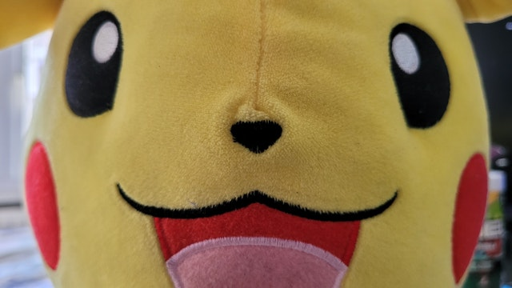

Portfolio - Images
My favourite image

Pikachu is one of the most popular Pokémon in the world, everyone knows about him. The reason I took this image is because I also really like this Pokémon. In the past, I played a lot of Pokémon games, that's why this has so much meaning to me.
This image fits in with the composition techniques because of the zoom in.